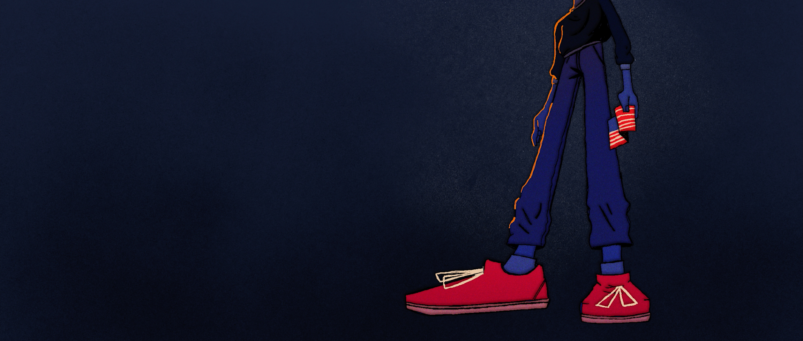

When a passionate teacher raises questions surrounding the parental neglect of one of her students by his drug-addicted mother, a series of events are set in motion bringing a black family face to face with police brutality and the ramifications of being a black boy in America during a time where your life doesn't seem to matter.
ABOUT BLACK BOY
The first chapter of a longer story, this animated short highlights the aftermath following a police brutality incident all too similar to the news stories captivating the airwaves today. Black Boy, in this iteration; serves to show the pain a mother feels after her family has been ripped apart and how a nation mourns in the aftermath.
The beginning starts with the end.
While this short film explores the effects of police brutality, Black Boy as a longer feature length film will explore the mental, emotional and physical challenges a black boy faces every day trying to grow up while living in a nation where all the odds are stacked against you.
Black Boy will become a film following the story of two adolescent brothers who must learn how to navigate life after their mother’s drug addiction takes hold slowly desecrating a once healthy and loving family. Their lives are turned upside down as their mother falls deeper into addiction. Throughout the film, viewers will watch as the actions of certain individuals each play a role in pushing this family towards their inevitable demise.
Why is Black Boy important?
The United States has the highest rate of police violence towards African Americans. More than any other developed country in the world. Police brutality is a serious problem, but people forget that children are the silent victims of this crisis. Maybe if people could visually see the affects police brutality and other detrimental factors have on children and the next generation, then maybe America can start a conversation.
Key Facts


Black Boy will be screenwriter & producer’s, Corey Wooten’s, first project. This film explores police brutality, the achievement gap, and single mother issues that are near and dear to his heart.